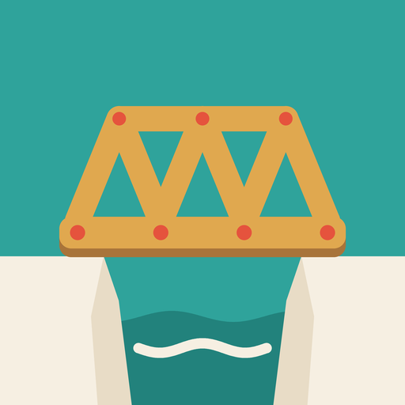

Plankbury: Bridge Builder
by Saikaizen InnovationsSupport
Stuck on a level, found a bug, or lost a purchase? Write to superprogrammersaurabh@gmail.com with your phone model and the level number.
Quick answers
My bridge keeps breaking. Tap Replay on the result card: the slow-motion replay zooms to the first beam that snapped. Red beams are close to their limit. Triangles make a bridge stiff; steel handles big loads; cable only pulls.
I am over budget. You can always test. To pass, trim cheaper materials or shorter beams, or watch a video for 10% more budget.
Pro is missing on a new phone. Settings > Restore purchases, with the same Google account.
Ads. There are never ads after a failed test, and none in the first two levels. Pro removes all ads.